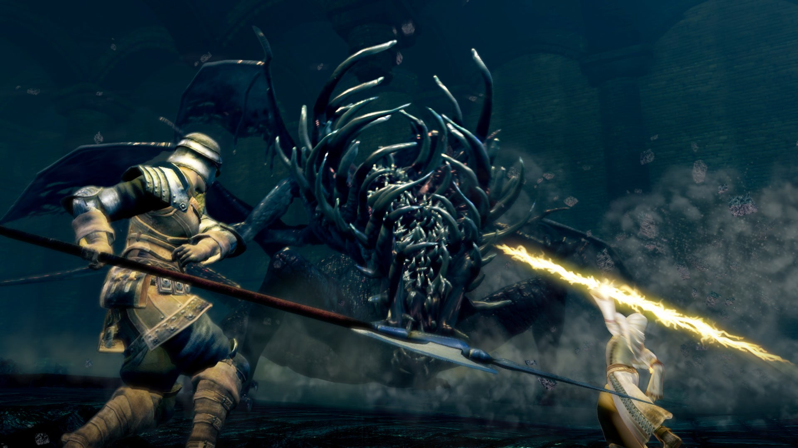

Soulsborne 101
le HUB des soulsbornes
Dark Souls I

Dans Dark Souls, l’histoire débute avec l’apparition de la Première Flamme, qui
introduit la dichotomie entre lumière et ténèbres dans un monde auparavant gris et figé.
Ce feu donne naissance aux Âmes des Seigneurs, que s’approprient Gwyn, Nito, la Sorcière
d’Izalith, et le Pygmée Furtif. Avec ce pouvoir, Gwyn et ses alliés vainquent les
dragons immortels, inaugurant l’Âge du Feu, une ère de prospérité pour les mortels.
Cependant, la flamme commence à vaciller, annonçant l’avènement des Ténèbres et
l’émergence des morts-vivants, maudits par le Signe Noir. Vous incarnez un Mort-vivant,
chargé de découvrir votre rôle dans ce cycle. Guidé par des personnages ambigus comme
Frampt et Kaathe, vous devez décider de relancer la flamme pour perpétuer l’Âge du Feu
ou l’éteindre pour embrasser l’Âge des Ténèbres. La narration fragmentée incite à
explorer et interpréter ce récit tragique.
Dark Souls II

Dans Dark Souls II, l'histoire explore le thème du cycle éternel de la vie, de la mort
et de la renaissance. Des siècles après les événements du premier jeu, le royaume de
Drangleic est plongé dans le chaos. La Première Flamme vacille à nouveau, et les mortels
souffrent de la malédiction des Mort-vivants, perdant leur humanité et sombrant dans la
folie. Vous incarnez un Élu Mort-vivant, attiré à Drangleic par une mystérieuse
prophétie. Là, vous découvrez que le roi Vendrick, autrefois puissant, a été trahi par
Nashandra, incarnation des ténèbres et de la convoitise. En quête de réponses, vous
devez collecter les Âmes des Seigneurs pour atteindre le Trône du Désir. À travers les
thèmes de la répétition et du destin, le jeu questionne votre rôle dans un cycle infini
: briser cette boucle ou la perpétuer en montant sur le trône.
Dark Souls III

Dans Dark Souls III, l’histoire explore l’aboutissement de l’Âge du Feu et l’épuisement
du cycle qui le maintient. La Première Flamme faiblit une fois de plus, menaçant de
plonger le monde dans un Âge des Ténèbres définitif. Pour empêcher cette fin, les
Cendres des Seigneurs – des êtres autrefois puissants ayant lié la flamme – sont
convoquées pour raviver le feu. Cependant, ils refusent leur devoir, et vous, un
Morteflamme, êtes réveillé pour les traquer. À travers votre quête, vous affrontez des
entités telles que Lothric, le prince hérétique, et Aldrich, le dévoreur des dieux. Le
jeu confronte le joueur à l’idée que prolonger l’Âge du Feu ne fait que retarder
l’inévitable. Vous choisissez de rallumer la flamme, de l’éteindre pour embrasser les
Ténèbres, ou de la laisser mourir naturellement, mettant fin au cycle et permettant un
renouveau incertain.